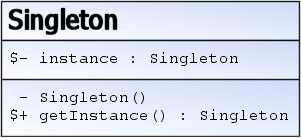

Singleton
Problème
- La classe ne doit être instanciée qu'une seule fois
- L'instance doit être accessible statiquement
Solution

Exemple d'implémentation
class Singleton {
private static Singleton instance ;
private Singleton(){
}
public static Singleton getInstance(){
if ( null == instance ){
instance = new Singleton();
}
return instance ;
}
}Exemple dans l'API JAVA
- Runtime accessible via System.getRuntime()
Mise en garde
- Il y a plusieurs variantes d'implémentation
- Les implémentations thread safe sont fonction du langage
- La singletonite est un anti-pattern
Lien(s) utile(s)
https://fr.wikibooks.org/wiki/Patrons_de_conception/Singleton